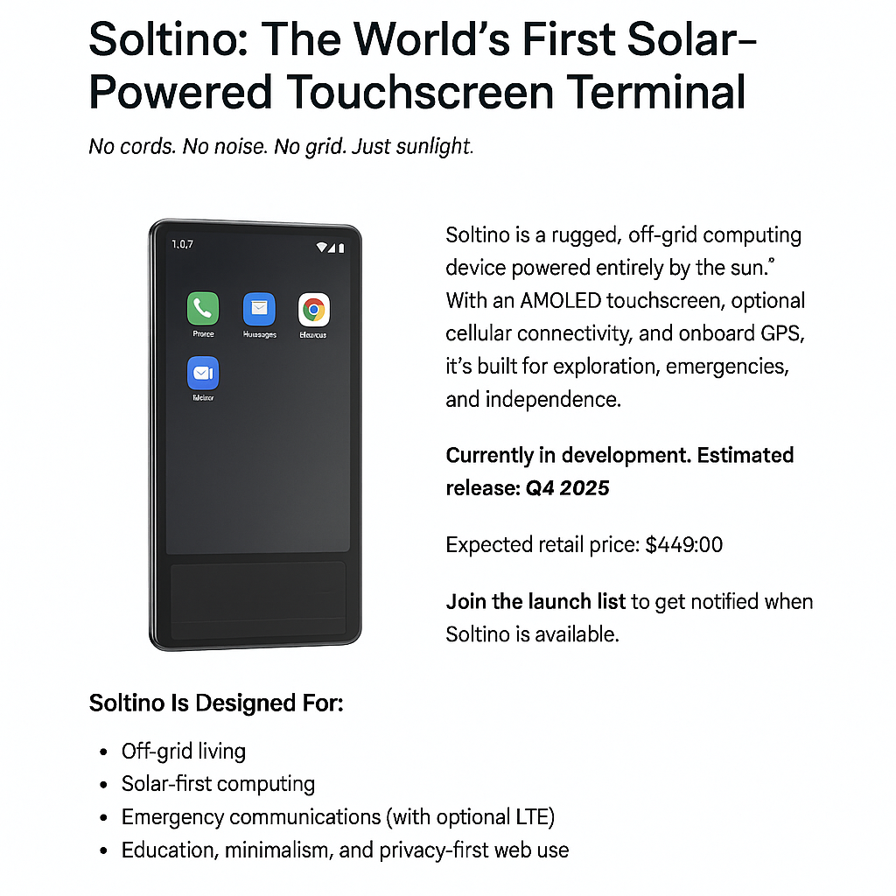

No cords. No noise. No grid. Just sunlight.

Soltino is the world’s first solar-powered, portable touchscreen terminal powered by a Raspberry Pi. Built for off-grid living, emergency readiness, and privacy-first computing.
We’re opening a limited number of Founder's Edition units ahead of our full release. Estimated shipping begins late 2025. Secure yours today — fully refundable until shipping.
Reserve one soon!*Soltino is currently in active prototyping. Preorders help fund development and manufacturing. Estimated delivery window: Oct–Dec 2025.